MILANO RACING / ENVIRONMENT RESEARCH / 22 OCTOBER 2026
Whole-circuit surroundings
This is the environment inventory for all twelve circuits. The acceptance target is a continuous, recognisable setting throughout a lap: distinctive buildings, supporting neighbourhoods, terrain, vegetation, roads, bridges, shorelines, grandstands and pits. One landmark per track is not sufficient.
Evidence status: geographic footprints and source IDs establish placement, not facade fidelity. Architectural meshes are reconstructions. A count of buildings or a successful load test does not prove a complete replica. The remaining accuracy work below is deliberately visible.
How the environment is built
- Register OSM footprints and roads to each circuit’s metre coordinate frame; retain source way/node IDs.
- Use terrain elevation and mapped land cover for foundations, slopes, shorelines and forests. Satellite colour is from 2016/2017 and is not evidence of current building geometry.
- Reconstruct important silhouettes and structural features from promoter, architect, fabricator and heritage sources. Detailed dimensions without a published reference remain estimates.
- Check concave roofs/courtyards, bridge continuity and supports, road clearance and full-lap views. Keep moving guides and foliage out of immutable scenery batches.
- Measure render cost with repeatable viewpoints and keep the same scene across quality presets. Do not substitute a landmark count for visual inspection.
BAHRAIN
Full-lap scope. Sakhir tower and pit/media complex, Main/Turn 1/University/Victory/Batelco spectator areas, paddock and service roads, open desert and surrounding ridges.
Current model. Sakhir Tower, Batelco and named main, first-turn, university and victory stands. Supporting buildings and service roads use mapped footprints; canopies and seats are reconstructed.
Map inventory: 188 building footprint pieces; 7 context selections; 0 connecting infrastructure records. Existing primary landmark models are additional. Some records share one physical structure and should not be counted as separate landmarks.
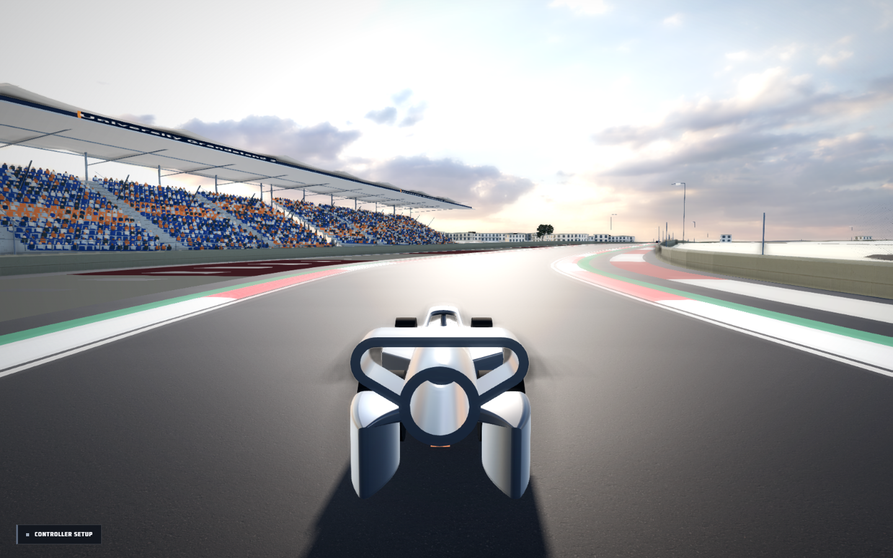
Current in-game inspection frame. One view of the environment; not evidence that every landmark is accurately reproduced.SINGAPORE
Full-lap scope. Pit straight/Flyer, Republic Boulevard, the hotel district, Stamford Road and Padang, civic buildings, Anderson Bridge/Fullerton, Esplanade and Marina Bay waterfront.
Current model. Fullerton, Victoria clock tower, City Hall, Old Supreme Court, cricket/recreation clubs, St Andrew’s Cathedral, Swissôtel, Pan Pacific, Ritz-Carlton, Mandarin Oriental, Merlion, memorial, Esplanade shells, ArtScience petals, Marina Bay Sands, Flyer and pit building. Mapped bridge and surrounding road geometry connects these districts.
Map inventory: 647 building footprint pieces; 13 context selections; 111 connecting infrastructure records. Existing primary landmark models are additional. Some records share one physical structure and should not be counted as separate landmarks.
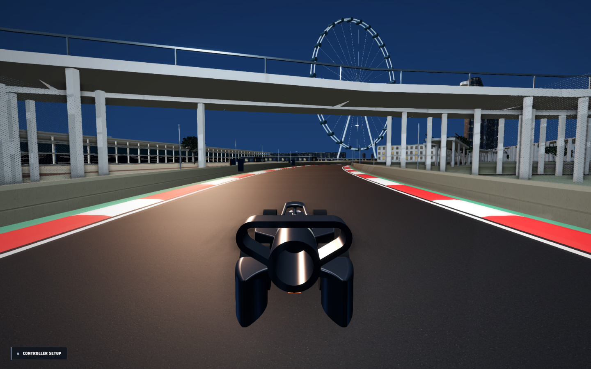
Current in-game inspection frame. One view of the environment; not evidence that every landmark is accurately reproduced.MONZA
Full-lap scope. Start/pit complex, Rettifilo, Curva Grande/Roggia, Lesmo woodland, Serraglio, Ascari and Parabolica; historic oval and the park road network.
Current model. Mapped pit building, podium, hospitality, other buildings/stands, park forests, bridges and surrounding roads. The historic banking follows mapped disused raceway polylines instead of a decorative torus.
Map inventory: 370 building footprint pieces; 2 context selections; 23 connecting infrastructure records. Existing primary landmark models are additional. Some records share one physical structure and should not be counted as separate landmarks.
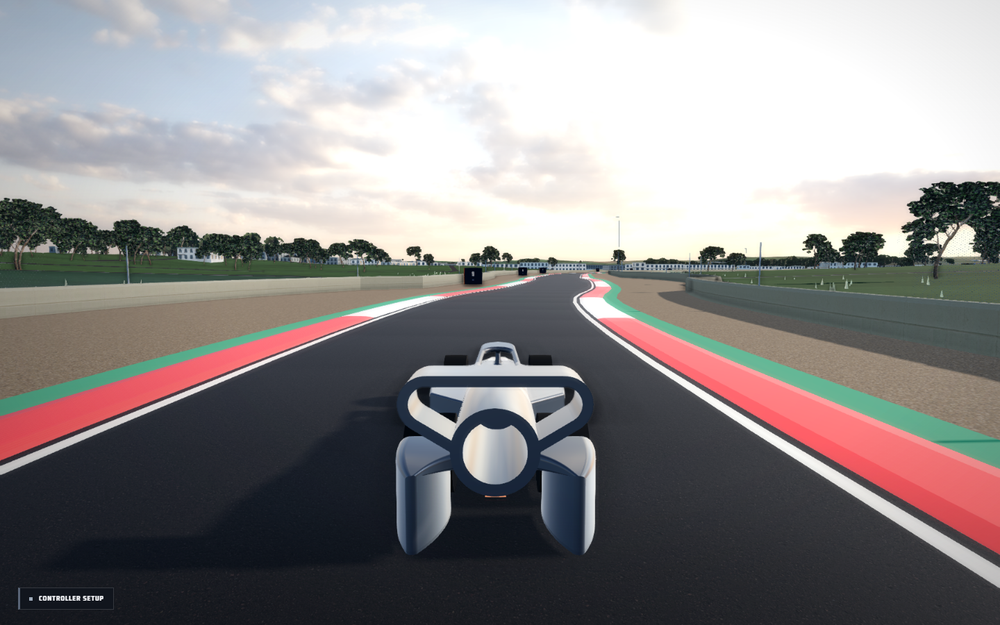
Current in-game inspection frame. One view of the environment; not evidence that every landmark is accurately reproduced.MONACO
Full-lap scope. The whole harbour and hillside circuit: Sainte-Dévote and the climb, Massenet/Casino Square, the hotel district, Fairmont hairpin and tunnel, Nouvelle Chicane, Tabac, the swimming-pool complex, Rascasse and the pit harbour.
Current model. Casino, Fairmont, Hôtel de Paris, Hermitage, Café de Paris, chapel, Rascasse, Yacht Club, Palace and Oceanographic Museum; mapped apartment blocks, bridges, roads, piers, harbour boats and quay walls.
Map inventory: 1663 building footprint pieces; 10 context selections; 78 connecting infrastructure records. Existing primary landmark models are additional. Some records share one physical structure and should not be counted as separate landmarks.
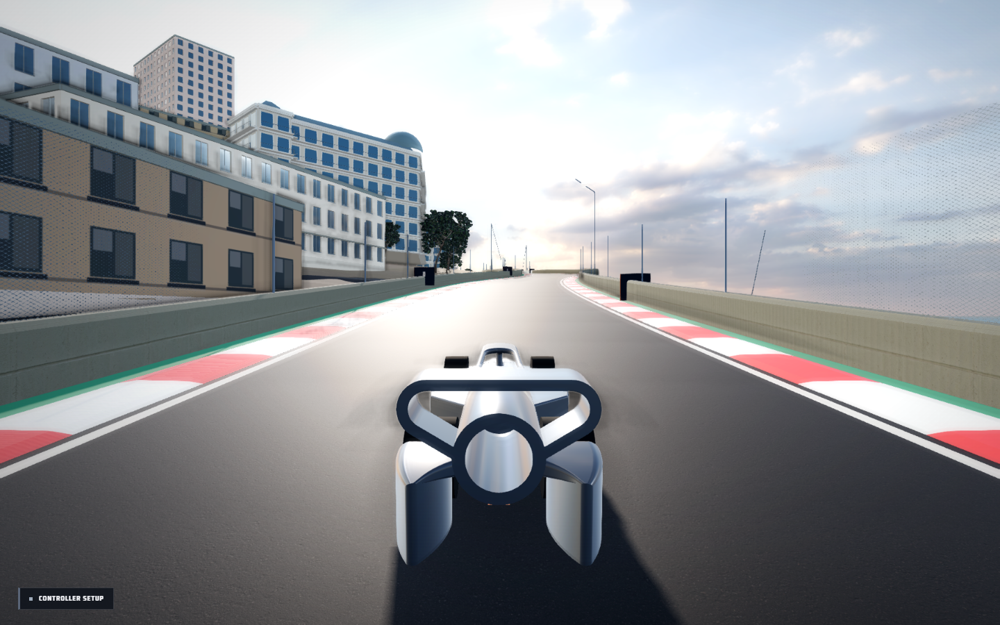
Current in-game inspection frame. One view of the environment; not evidence that every landmark is accurately reproduced.AUSTRIA
Full-lap scope. Start/finish paddock and Wing, Turn 1 and Red Bull stands, Remus hillside, valley and rural buildings, Schönberghof, bull sculpture and wooded slopes.
Current model. Mapped pits and grandstands, central airfoil-shaped Wing with glazing and angled supports between the Start/Ziel seating, authored Schönberghof and bull silhouette, rural footprints, roads, DEM slopes and mapped forest cover. Wing dimensions and placement follow the fabricator description and the promoter plan; detailed surfaces remain reconstructed.
Map inventory: 160 building footprint pieces; 1 context selections; 11 connecting infrastructure records. Existing primary landmark models are additional. Some records share one physical structure and should not be counted as separate landmarks.
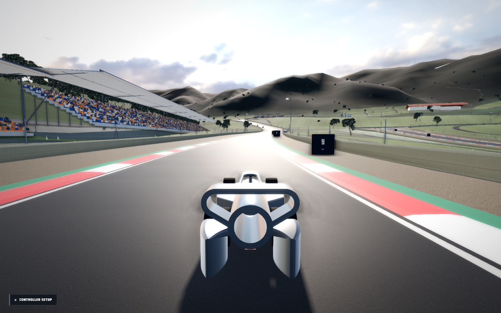
Current in-game inspection frame. One view of the environment; not evidence that every landmark is accurately reproduced.SILVERSTONE
Full-lap scope. Hamilton Straight and Wing, Hilton bridge/hotel, Abbey/Village/Loop, Brooklands/Luffield, old pits/Woodcote, Copse, Maggotts/Becketts, Hangar/Stowe and Vale/Club.
Current model. Wing folded roof, Hilton, BRDC clubhouse, museum, mapped grandstands/airfield buildings and service roads. Seating is oriented towards the track rather than the map polygon’s arbitrary direction.
Map inventory: 210 building footprint pieces; 3 context selections; 11 connecting infrastructure records. Existing primary landmark models are additional. Some records share one physical structure and should not be counted as separate landmarks.
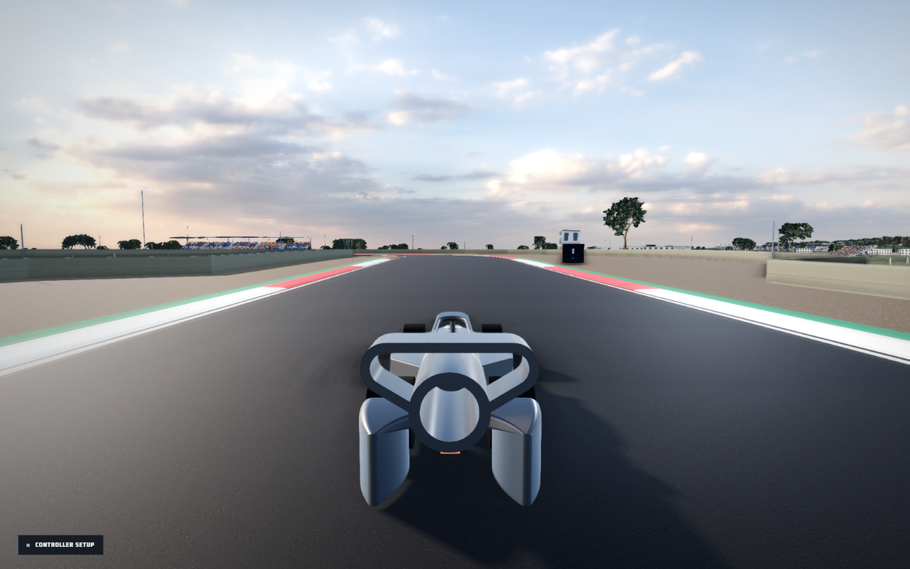
Current in-game inspection frame. One view of the environment; not evidence that every landmark is accurately reproduced.ABU DHABI
Full-lap scope. Main pits and grandstand, North/West/South stands, marina and hotel crossing, waterfront hospitality, Ferrari World backdrop and island access roads.
Current model. North/West canopies and Main/Marina/South stands, reconstructed W Hotel grid shell, mapped Ferrari World roof, marina piers/boats, buildings and bridges. Hotel envelope dimensions come from its structural engineer; its detailed skin is a reconstruction.
Map inventory: 214 building footprint pieces; 4 context selections; 18 connecting infrastructure records. Existing primary landmark models are additional. Some records share one physical structure and should not be counted as separate landmarks.
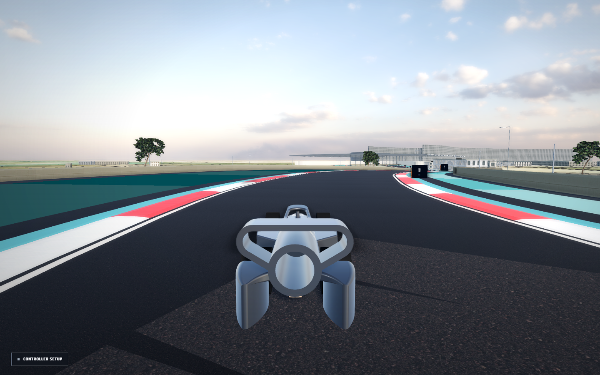
Current in-game inspection frame. One view of the environment; not evidence that every landmark is accurately reproduced.MILANO AUTODROMO
Full-lap scope. The original signature circuit: complete lap, pit/paddock, spectator zones, landscape and sponsor placements.
Current model. Original 5.033 km, 15-corner design, folded-roof paddock and landscaped environment. This venue has no real-world geographic reference and is not FIA homologated.
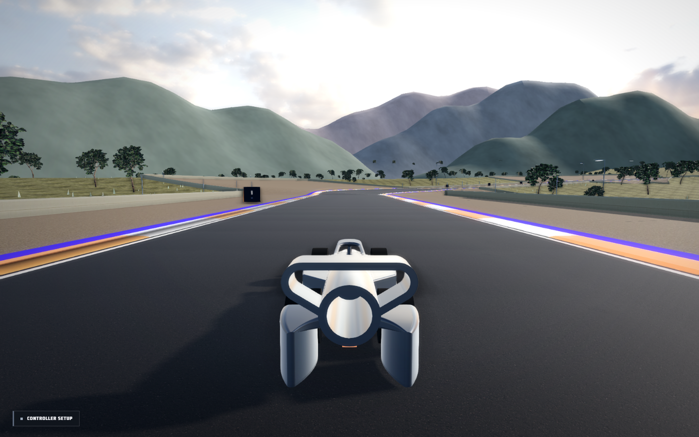
Current in-game inspection frame. One view of the environment; not evidence that every landmark is accurately reproduced.SPA-FRANCORCHAMPS
Full-lap scope. Both pit complexes, La Source, Eau Rouge/Raidillon, Kemmel and Les Combes, forested middle sector, Pouhon/Fagnes, Stavelot/Blanchimont and the final chicane.
Current model. F1/endurance pits, Raidillon and Endurance stands, La Source/Eau Rouge hotels, mapped buildings and access bridges, DEM terrain and forest cover.
Map inventory: 110 building footprint pieces; 4 context selections; 9 connecting infrastructure records. Existing primary landmark models are additional. Some records share one physical structure and should not be counted as separate landmarks.
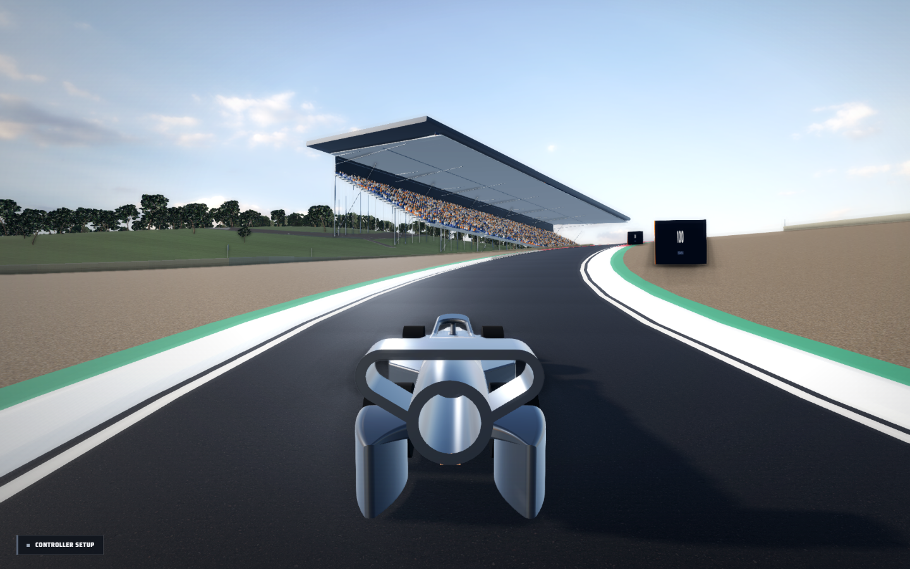
Current in-game inspection frame. One view of the environment; not evidence that every landmark is accurately reproduced.SUZUKA
Full-lap scope. Pit straight and chicane spectator areas, Circuit Wheel/amusement park, first curve/S-curves/Dunlop, Degner crossing, hairpin, Spoon and 130R, hotel and service buildings.
Current model. Mapped 350 m pit building with its longitudinal grade, wheel at its mapped position, circuit hotel, other buildings and stands, bridges, overpass and wooded terrain. Individual amusement rides beyond the wheel still need dedicated models.
Map inventory: 270 building footprint pieces; 2 context selections; 23 connecting infrastructure records. Existing primary landmark models are additional. Some records share one physical structure and should not be counted as separate landmarks.
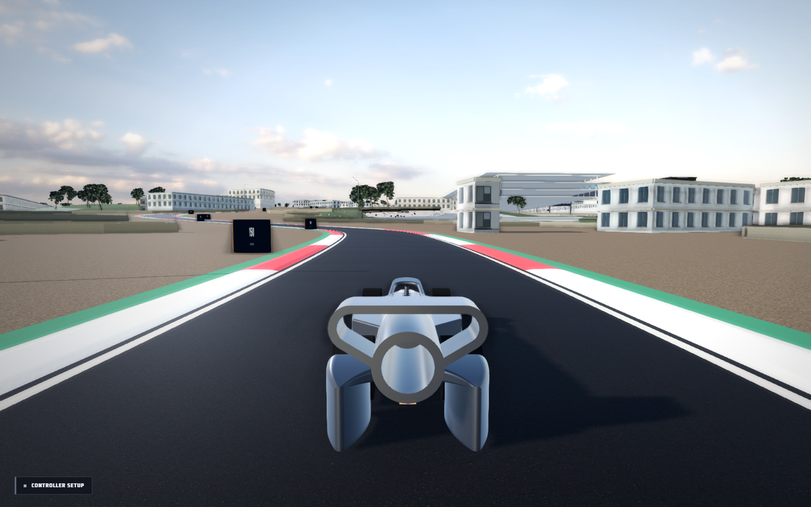
Current in-game inspection frame. One view of the environment; not evidence that every landmark is accurately reproduced.INTERLAGOS
Full-lap scope. Pit/main stand complex, Senna S/Curva do Sol, Reta Oposta, infield bends, Junção climb, lake setting, kart circuit, urban edge and roads.
Current model. Authored pit roof, mapped spectator buildings, neighbouring urban footprints, access roads and terrain. Many background facades are still typological reconstructions rather than individually matched elevations.
Map inventory: 3024 building footprint pieces; 0 context selections; 2 connecting infrastructure records. Existing primary landmark models are additional. Some records share one physical structure and should not be counted as separate landmarks.
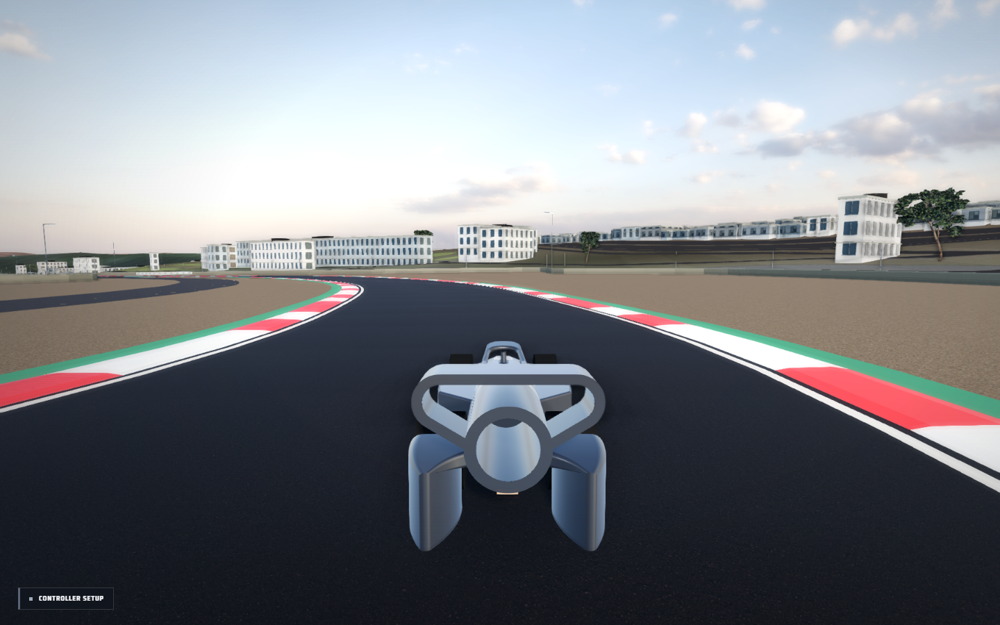
Current in-game inspection frame. One view of the environment; not evidence that every landmark is accurately reproduced.ZANDVOORT
Full-lap scope. Pit/main grandstand, Tarzan/Hugenholtz, dune sections, arena and banked final corner; paddock, coastal roads and neighbouring buildings.
Current model. Mapped pit building and main grandstand, spectator buildings, local road network, sandy terrain and dune elevations. Temporary race-weekend stands vary by season and require promoter-map interpretation.
Map inventory: 398 building footprint pieces; 1 context selections; 4 connecting infrastructure records. Existing primary landmark models are additional. Some records share one physical structure and should not be counted as separate landmarks.
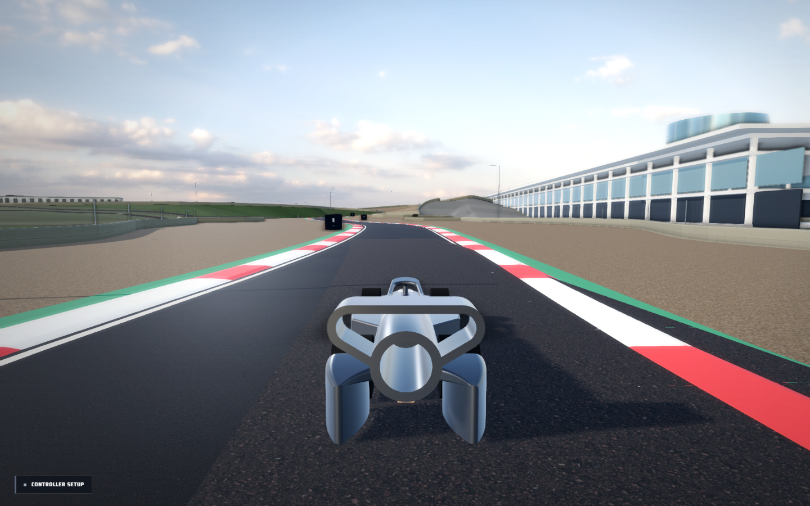
Current in-game inspection frame. One view of the environment; not evidence that every landmark is accurately reproduced.Remaining fidelity work
These are game reconstructions, not laser scans. Individual facade proportions, ornament, roof plant, vegetation species and temporary race furniture still need reference matching. Monaco’s cliff/tunnel transitions, Suzuka’s other amusement rides, and season-specific street-circuit installations remain explicit follow-up items. Public OSM data has missing heights and incomplete outlines; generic geometry at those locations must not be presented as verified architecture.
Source trail and reproducibility
Read src/venue-context-data.json for each selected name, footprint, original tags, source URL, courtyard holes and roof mesh. qa/venue-source-inventory.json lists named structures in the cached extracts. tools/venue-context.py rebuilds selections and roof geometry offline; it requires Shapely 2.1 or later. The normal game build only reads the baked JSON. OSM-derived data remains attributed under ODbL; reference photographs and promoter PDFs are not redistributed in the release.
See Validation and limits for the exact test coverage, and Circuit Research for geometry, widths and racing-line sources.